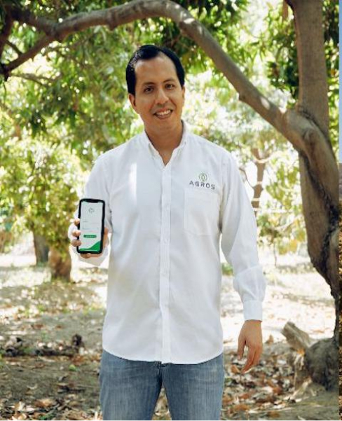

AGROS y la FAO:
Startup Peruana reconocida por la FAO que revaloriza a las y los agricultores mediante la tecnología
La reciente edición de la Revista Somos del Diario El Comercio (Perú) relata la historia de AGROS, su gran impacto en la digitalización de la agricultura familiar y su reciente reconocimiento de la FAO como experiencia exitosa en materia de digitalización de los sistemas agroalimentarios en el mundo.
ver más noticias